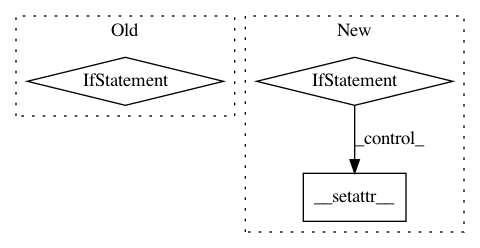

f448c24dc7b096a2041b699ce1bcb72cf287144b,GPflow/param.py,Param,_set_fixed,#Param#Any#,352
Before Change
prev_fixed = self.fixed
self._fixed = value
if self.root is not None and self.root.is_compiled:
if prev_fixed == value:
return
graph = self.root.graph
if value:
remove_from_trainables(self._variable, graph)
else:
add_to_trainables(self._variable, graph)
def __setattr__(self, key, value):
When some attributes are set, we need to recompile the tf model before
evaluation.
After Change
if not isinstance(value, bool):
raise TypeError("Fixed property value must be boolean.")
if self._externally_defined:
raise GPflowError("Externally defined parameter is not modifiable.")
prev_fixed = self.fixed
if not self.is_compiled or prev_fixed == value:
return
object.__setattr__(self, "fixed", value)
graph = self.root.graph
if value:
remove_from_trainables(self._tensor, graph)
else:
In pattern: SUPERPATTERN
Frequency: 3
Non-data size: 3
Instances
Project Name: GPflow/GPflow
Commit Name: f448c24dc7b096a2041b699ce1bcb72cf287144b
Time: 2017-08-29
Author: art.art.v@gmail.com
File Name: GPflow/param.py
Class Name: Param
Method Name: _set_fixed
Project Name: GPflow/GPflowOpt
Commit Name: 0301ffaa163f037bf999ea93522ba9d054e0f0c9
Time: 2017-08-13
Author: joachim.vanderherten@ugent.be
File Name: GPflowOpt/models.py
Class Name: ModelWrapper
Method Name: __setattr__
Project Name: pyinstaller/pyinstaller
Commit Name: 7a7eb11a7bed7024831694f973c3f2cf30fd359e
Time: 2020-07-01
Author: 50370070+Legorooj@users.noreply.github.com
File Name: PyInstaller/depend/imphook.py
Class Name: ModuleHook
Method Name: _load_hook_module